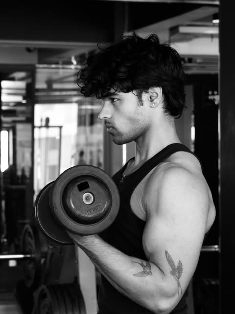
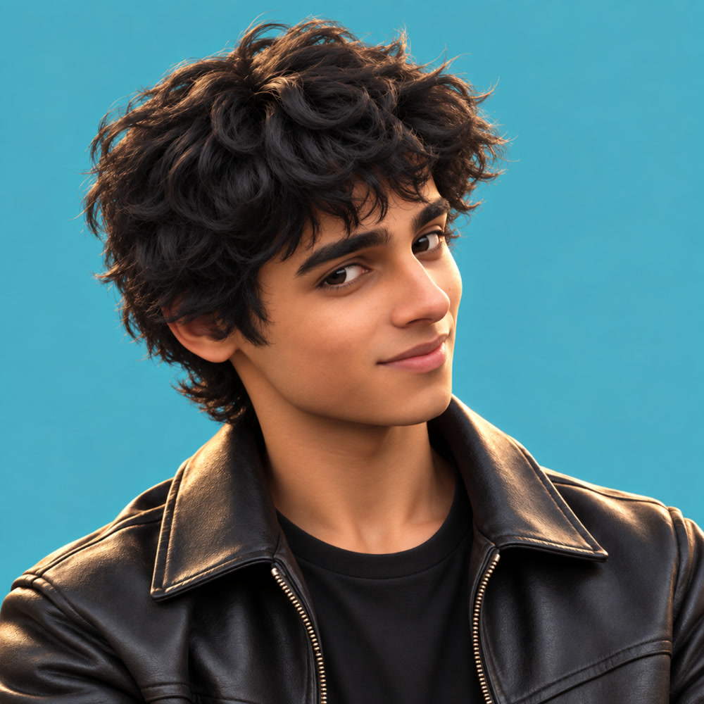
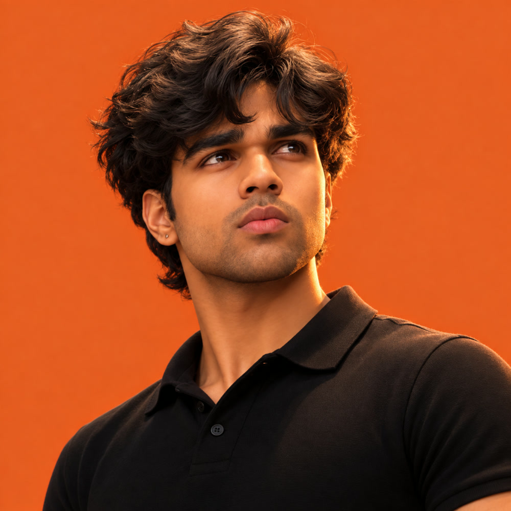

A Sahil × Shivam production


Introducing
Sahil PathakDeveloper · Creator · Model


“In my lane, letting time do its thing.”
Shivam SableFitness · Fashion · Model

Fitness.

Fashion.

Lifestyle.

On camera.

“Post & forget.”
Two people.
One team.


Sahil & Shivam
Creators · Models · Builders
Let's create something.